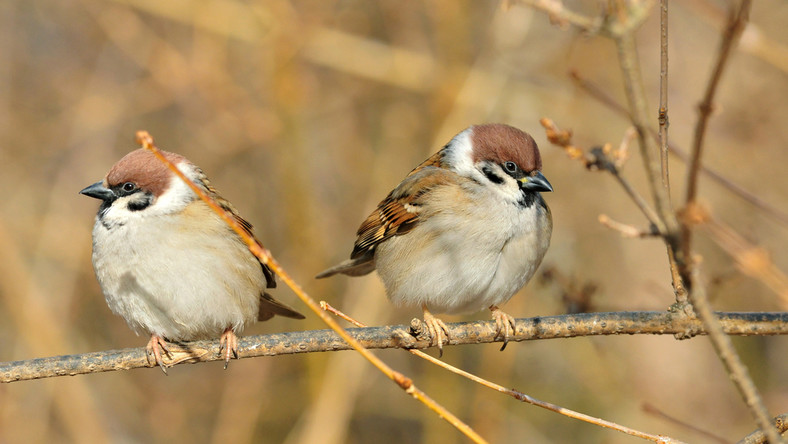

Witam na stronie atlasu ptaków :)

O czym jest ta strona?
Ta strona jest poświęcona wybranym gatunkom ptaków
Po co jest ta strona?
Ta strona została stworzona dla Pana Łukasza Pownuga jako zadanie domowe
Kto jest autorem tej strony?
Autorem tej strony jest Michał Klimontko z klasy 3D